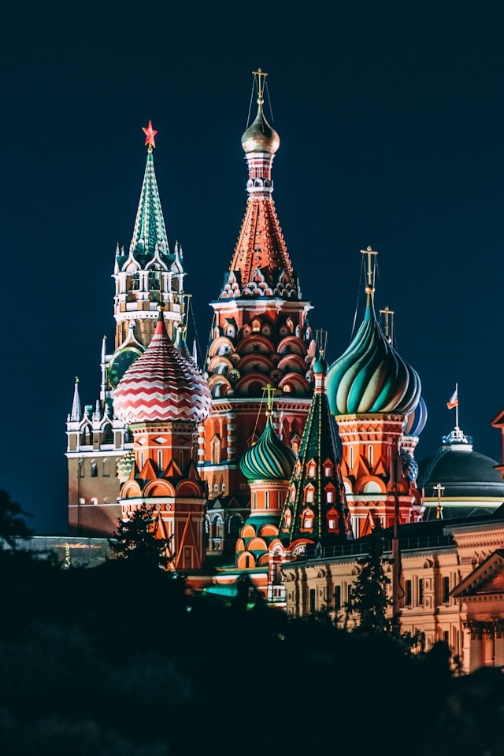
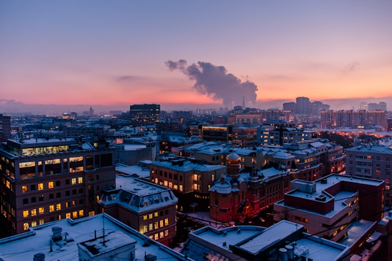
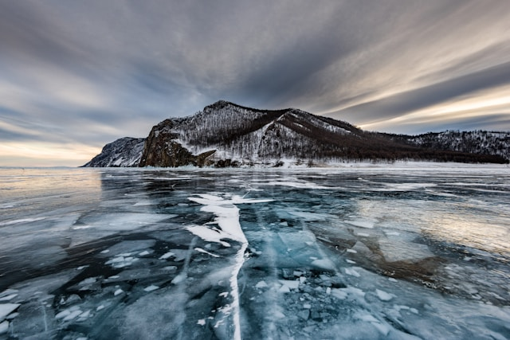
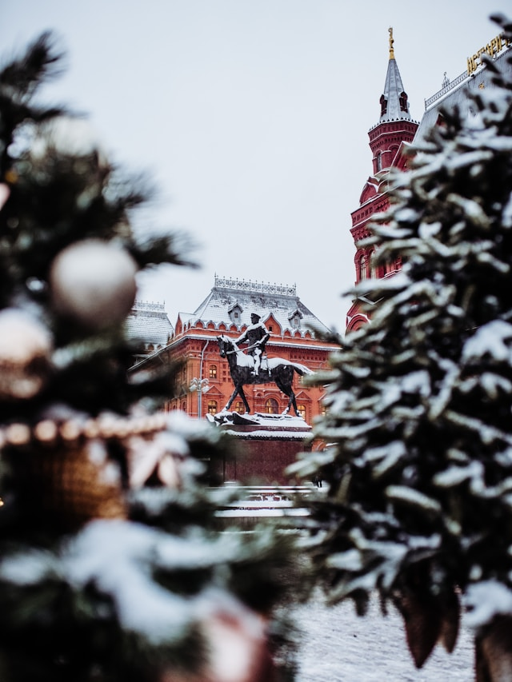

Image de la cathédrale Basile-le-Bienheureux. Photo de Nikolay Vorobyev sur
Unsplash

Image d'une ville. Photo de Aleksandr Popov sur
Unsplash

Image d'un paysage gelé. Photo de Sergey Pesterev sur
Unsplash

Image d'une statue. Photo de Aurelien Romain sur
Unsplash